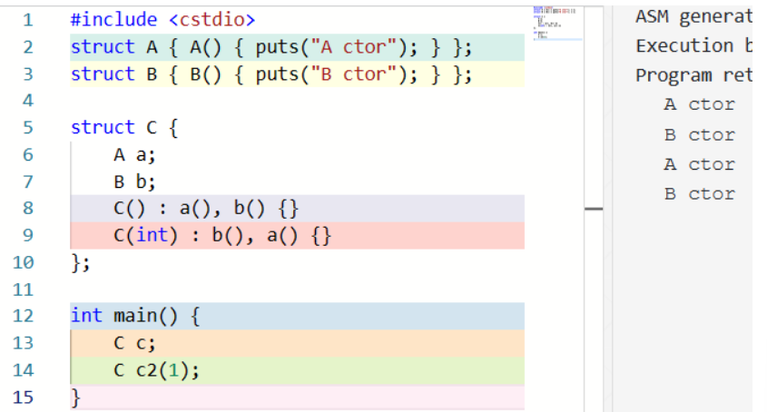
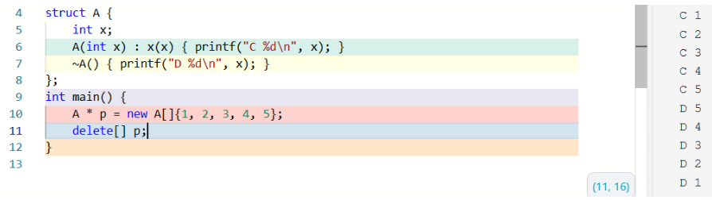
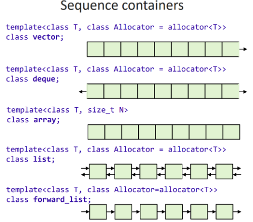

OOP czp¶
Class¶
定义与声明¶
- 可以仅声明而不定义，只要这个函数没有被使用
- 成员函数不能重新声明
using¶
(using的引入是为了支持模版<template>)
c++引入using来声明类型别名，用途和typedef类似，如typedef struct arraylist_* arraylist;可以写作using arraylist = struct arraylist_ *;
struct Foo {
using elem = int;
elem x; // OK, x has type int
elem add(elem v) { x += v; return x; }
private:
using type = char;
type c; // OK, c has type char
};
// elem y; // Error: unknown type name 'elem'
Foo::elem z; // OK, z has type int
// Foo::type c; // Error: 'type' is a private member of 'Foo'
this 指针¶
在成员函数的函数体中，访问任何成员时都会被自动添加 this->，例如 void Foo::bar(int v) { x += v; }中的 x += v; 实际是 this->x += v;
inline¶
- 内联函数减少函数调用的开销
- 内联函数的代价：内联函数会在每处被调用的地方展开，因此，如果被内联的函数太大会导致目标代码太大，对代码空间和性能都会有一定影响
- 只有函数体写在类的定义中的成员函数才会被内联
constructor 构造函数 (ctor/c'tor)¶
构造函数与一般成员函数的区别是，他不写返回值类型，而且直接使用类的名字（构造函数没有名字）。他使程序员能够建立起某种保证，其他成员函数都能依赖这个保证。
Conrainer 是一个构造函数，val = nullptr 就是前面提到的「保证」，即 val 的值要么是 nullptr，要么是其他成员函数赋的值，而不会是个随机的值。
这样，就可以使用 Container c = Container(); 构造一个对象了。
或者一个构造函数也可以带参数：（注意无参构造时候不能加 () ）
class Container {
elem* val;
public:
Container(unsigned size) {
val = (elem*)malloc(sizeof(elem) * size);
}
};
Container c2 = Container(64); 构造一个自定义大小的容器了。
Note c++ 还有另外一种初始化方式：
int a = 4; 等价于 int a(4);, Container c2 = Container(64); 等价于 Container c2(64);
class User {
int id, age, failTimes;
char* password;
public:
User(int id, int age, char* pw) {
this->id = id;
this->age = age;
failTimes = 0;
password = copyStr(pw); // assume that `copyStr` gets a string and allocate some space and copy it
}
};
class User {
int id, age, failTimes;
char* password;
public:
User(int id, int age, char* pw) : id(id), age(age), failTimes(0), password(copyStr(pw)) {}
// ...
};
class Point {
int x, y;
public:
Point(int x, int y) : x(x), y(y) {}
};
class Circle {
Point c;
int r;
public:
Circle(int cx, int cy, int r) : c(cx, cy), r(r) {}
};
member initializer list 的顺序不影响成员被初始化的顺序，它们按照在类定义中的顺序初始化。例如： 
member initializer list 可以将构造委托给同一类型的另一个构造函数，做出这一委托的构造函数称为 delegating constructor:
我们输出：内存空间分配 new 和 delete¶
New: 申请内存 + 调用构造函数
new 返回的是一个指针。
创建对象 int * p1 = new int; 创建数组 int * pa = new int[n];
如果 new 的是一个类的对象，那么构造函数就会被直接调用：
struct Foo{ Foo(){ puts("ctor called");}};
int main(){
Foo *p = new Foo;
puts("=======");
Foo *p = new Foo[5];
}
Note: new or malloc
- new 分配成功返回的是对象类型指针，与对象严格匹配，无类型转换，所以 new 是符合类型安全性操作符；malloc 返回值类型是 void* ，一般需要接强制类型转换成我们需要的类型。
- new 可以在内存分配的时候通过调用构造函数来初始化变量，但 malloc 不行。
Delete: 调用析构函数 + 释放内存
如果 p 在 new 的时候创建的是单个对象，则应该用 delete p; 的形式 (single-object delete expression) 回收；如果 p 在 new 的时候创建的是数组，则应该用 delete[] p;
struct Foo{ ~Foo(){ puts("dtor called");}};
int main()
{
Foo *p = new Foo;
delete p;
puts("=====");
Foo *p = new Foo[5];
delete[] p;
}
我们能够得到输出：
函数默认参数¶
void point(int x = 3, int y = 4);
point(1, 2); // calls point(1, 2)
point(1); // calls point(1, 4)
point(); // calls point(3, 4)
因此，对构造函数：
class Container {
elem* val;
public:
Container(unsigned size = 512) {
val = (elem*)malloc(sizeof(elem) * size);
}
};
Container c1; 构造一个默认大小 (512) 的容器，或者用 Container c2(64); 构造一个自定义大小的容器了。前者实际上是 Container(512)，而后者是 Container(64)。
函数重载¶
用传入的参数来选择不同的构造函数
两个只有返回值类型不同的函数不是合法的重载，因为调用时不能完成重载解析。如：
要注意函数重载和默认参数的使用：void f(int i = 1);
void f();
void foo() {
f(1); // OK, call the first one
f(); // Error: ambiguous
}
destructor 析构函数(dtor/d'tor)¶
自 C++11 起，我们仍然可以通过 = default; 或者 = delete; 来生成默认的析构函数，或者删除 implicitly-declared destructor。例如：
这里我们告诉编译器在private范围内显式生成了默认的构造函数。
这里我们将 implicitly-declared destructor 标记为 deleted。
如果 Foo 的析构函数是 deleted 的，或者在当前位置不可访问 (如当前在类外，但是析构函数是 private 的)，那么类似 Foo f; 的全局变量、局部变量或者成员变量定义是非法的。但是，这种情况下，可以通过 new 来创建一个动态的对象，因为这样创建的对象并不隐式地在同一个作用域内调用析构函数。
数组元素的析构函数调用顺序与其构造顺序相反。

拷贝赋值运算符¶
class Container {
elem* val;
unsigned size = 0, capa;
public:
Container(unsigned capa) : val(new elem[capa]), capa(capa){}
~Container() { delete[] val; }
void operator=(Container from) {
if (from->val != val) { // avoid self-assignment
if (from->capa != capa) { //如果 capa 和 from->capa 的值相同，那就没必要重新开一份空间了
delete[] val;
val = new elem[from->capa];
}
for (unsigned i = 0; i < from->size; i++) {
val[i] = from->val[i];
}
size = from->size;
capa = from->capa;
}
}
};
用户也可以将 operator= 设置为 = default; 或者 = delete;。如果 operator= 在当前上下文不可见，那么 a = b; 这样的表达式非法：
class Foo {
void operator=(Foo){} // private operator=
void foo() {
Foo a, b;
a = b; // OK, private function available here
}
};
struct Bar {
void operator=(Bar) = delete; // deleted operator=
void foo() {
Bar c, d;
c = d; // error: use of deleted function
// 'void Bar::operator=(Bar)'
}
};
void foo() {
Foo a, b;
a = b; // error: 'void Foo::operator=(Foo)'
// is private within this context
Bar c, d;
c = d; // error: use of deleted function
// 'void Bar::operator=(Bar)'
}
运算符重载¶
先考虑一个存放 M * M 大小矩阵的类 Matrix：
于是我们需要处理函数重载：const int M = 100;
class Matrix {
int data[M][M];
public:
Matrix operator+(Matrix mat) { /* */ }
Matrix operator*(int x) { /* */ }
Matrix operator*(Matrix mat) { /* */ }
};
此时，如果我们写 m1 * m2，其实就等价于 m1 operator*(m2)，就调用我们写的重载了！
这样的实现方式确实能够实现上述操作，但是它限制了我们只能写出 Matrix * int 而不能写出 int * Matrix，因为后者被解释为 int::operator*(Matrix)，但是 int 中并没有这样的重载（C++ 也不希望支持给内部类型增加新的运算2）
因此我们要考虑把运算符重载放在全局：
const int M = 100;
class Matrix {
int data[M][M];
public:
Matrix operator+(Matrix mat) {puts("func 1"); return *this;}
Matrix operator+(int x) { puts("func 2"); return *this; }
Matrix operator*(Matrix mat) { puts("func 3"); return *this; }
};
Matrix operator+(int x, Matrix mat) { puts("func 4"); return *this; }
int main()
{
Matrix a, b;
a + b;
a + 1;
1 + a;
a * b;
}
friend 友元函数¶
c++允许一个类的定义授予一个外部的函数访问他的private成员，做法就是，将这个函数在该类的定义中生命为一个友元函数：
const int M = 100;
class Matrix {
int data[M][M];
public:
Matrix operator+(Matrix mat) { /* */ }
Matrix operator*(int x) { /* */ }
Matrix operator*(Matrix mat) { /* */ }
friend Matrix operator*(int x, Matrix mat); // Designates a function as friend of this class
};
Matrix operator*(int x, Matrix mat) {
Matrix tmp = mat; // copy mat
for (int i = 0; i < M; i++)
for (int j = 0; j < M; j++)
tmp.data[i][j] *= x; // can access private member Matrix::data
return tmp;
}
(如果我们要解决matrix乘法但是受到private限制又不做友元函数处理这个问题时，还有另外一种解法：)
const int M = 100;
class Matrix {
int data[M][M];
public:
Matrix operator+(Matrix mat) { /* */ }
Matrix operator*(int x) { /* */ }
Matrix operator*(Matrix mat) { /* */ }
};
Matrix operator*(int x, Matrix mat) {
return mat * x;
}
引用¶
c语言中我们使用指针来减少不必要的拷贝。例如有函数 int getSum(Matrix mat); 就可以改为 int getSum(Matrix * mat);，调用时通过 getSum(&m)，就可以只传递指针而不必拷贝整个对象了。
一个引用是一个已经存在的对象或者函数的别名。例如： （**注意引用要在定义时给出初始化）
这样，对 y 的所有操作都和对 x 的操作一样了；y 不是 x 的指针，也不是 x 的副本，而是 x 本身。包括获取它的地址—— &y 和 &x 的值相同。
也是因此，我们无法重新约束一个引用所绑定的变量。因为：
这里的y = z 是在进行赋值而不是重新绑定。
在同一个作用域内，给一个变量起一个别名并不会有太多的现实意义。引用最广泛的用法是作为参数传递。
于是我们让 Matrix 去传递引用：
const int M = 100;
class Matrix {
int data[M][M];
public:
Matrix operator-(const Matrix & mat) {
Matrix res;
for (int i = 0; i < M; i++)
for (int j = 0; j < M; j++)
res.data[i][j] = data[i][j] - mat.data[i][j];
return res;
}
};
const Matrix & mat 而不是 Matrix & mat,是因为我们想要声明 mat 是只读不可写的。
（我们能感觉到，c++中&这个符号表示的是引用，而*这个符号则表示的是指针。
引用与重载overload
将一个 int 类型的变量传递给 int 类型的参数和 int & 类型的参数的优先级是一样的，将 int 类型的变量传递给 int 类型的参数和 const int & 类型的参数的优先级也是一样的。
void f(int x) { puts("int"); } // Overload #1
void f(int & r) { puts("int &"); } // Overload #2
int main() {
int x = 1;
f(1); // OK, only #1 valid
f(x); // Error: ambiguous overload
}
int & 和 const int &，而 int 类型的变量绑定给这两种参数都是可行的，此时 int & 的更优。
void h(int & r) { puts("int &"); }
void h(const int & r) { puts("const int &"); }
int main() {
int x = 1; // Overload #1
const int y = 2; // Overload #2
h(1); // OK, only #2 valid
h(x); // OK, #1 called as x -> 'int&' is better than x -> 'const int&'
h(y); // OK, only #2 valid
}
关于引用和const的初始化
引用和const变量都需要在定义的时候就给出初始化。当在一个类中定义了引用和const变量但又没有直接进行初始化，那么就可以在构造函数中给出初始化。像这样：
int global = 10;
class Foo {
const int x = 4; // OK
const int y; // must be initialized by member initializer list
int & rz = global; // OK
int & rw; // must be initialized by member initializer list
public:
Foo(int m, int & n) : y(m), rw(n) {} // OK
Foo() : y(0), rw(global) {} // OK
Foo() : y(0) {} // Error: uninitialized reference member in 'int&'
Foo() : rw(global) {} // Error: uninitialized const member in 'const int'
};
I/O stream¶
#include <iostream>
#include <string>
using std::istream;
using std::ostream;
using std::string;
using std::to_string;
class Complex {
private:
double real, imaginary;
public:
// ...
string toString() const;
friend istream& operator>>(istream& is, Complex& right);
};
string Complex::toString() const {
string str = to_string(this->real);
str += " + ";
str += to_string(this->imaginary);
str += 'i';
return str;
}
ostream& operator<<(ostream& os, const Complex& right) {
return os << right.toString();
}
istream& operator>>(istream& is, Complex& right) {
char op;
is >> right.real >> op >> right.imaginary >> op;
return is;
}
int main() {
Complex c;
std::cin >> c;
std::cout << c;
}
不能解释但是能看懂。。。。。
istream 和 ostream 是类型，分别指输入和输出。
const 成员¶
当我们这样定义时，
声明为 const 的成员函数（const放在后面）成为 const 成员函数。const 保证不会更改 *this 的值。具体来说，声明为const 的成员函数中，this 的类型是 const Complex *；而如果没有声明为 const，则 this 的类型是 Complex *。
在 const 成员函数中，试图调用其他非 const 成员函数，或者更改成员变量都是不合法的。
注意，const int Foo::foo(); 不是 const 成员函数，它是个返回值类型为 const int 的 non-const 成员函数。
我们回顾之前的对 operator[] 的重载。事实上，通常的设计会这样重载：
class Container {
elem * data;
// ...
public:
elem & operator[](unsigned index) { return data[index]; }
const elem & operator[](unsigned index) const { return data[index]; }
// ...
}
const Container 时，第二个重载会被使用，此时返回的是对第 index 个元素的 const 引用；而如果调用者是 Container 时，第一个重载会被使用，此时返回的是对第 index 元素的 non-const 引用。
static 成员变量¶
C++ 规定，在类定义中，用 static 声明没有绑定到类的实例中的成员；例如：
int User::tot = 0; 开始，到程序结束为止。由于它是类的成员，因此访问它的时候需要用 User::tot。
static 成员不被绑定到类的实例中，也就是上面 User 类的每个实例里仍然只有 id 而没有 tot。(但是语法上仍然允许用一个类的实例访问 static 成员，例如 user.tot)
注意，static 成员不允许使用 default member initializer 和 member initializer list。
在类中的 static 成员变量只是声明。我们必须在类外给出其定义，才能让编译器知道在哪里构造这些成员。
inheritance 继承和 derived 派生类¶
对一个类的继承：public 可以被继承，private 不可以被继承，protected 可以被继承但不能被从外部直接访问。
在派生类内部（成员函数或者友元函数）使用基类成员时，不受继承方式的影响，只看该成员在基类中的属性（因此私有成员不能被访问）；在派生类外部使用基类成员时，继承方式会影响基类成员的访问属性。
三种继承方式：private 继承，protected 继承，public 继承。
- public: 所有基类成员在派生类中保持原有的访问级别
- protected: public->protected，其余不变
- private: 所有基类成员在派生类中变为private成员
| 继承方式/基类成员 | public成员 | protected成员 | private成员 |
|---|---|---|---|
| public继承 | public | protected | 不可见 |
| protected继承 | protected | protected | 不可见 |
| private继承 | private | private | 不可见 |
派生类拥有基类所有成员，还可以定义自己的成员。派生类成员是指在派生类中包含但不在基类中包含的成员。
友元不是类的成员，因此不能被继承。
virtual 虚函数¶
用基类指针指向派生类的时候，能正确调用派生类中的实现函数，从而实现多态。
在成员函数声明的时候，在其前面加上 virtual 使其变为虚函数。（定义的时候可以不加）
拥有虚函数的类会自动生成一个虚函数表 vtbl （属于类而不是对象），是一个指针数组，里面的元素是虚函数的函数指针创建对象时，对象内部会自动生成一个虚表指针 *vptr （通常会在对象内存的最起始位置），指向类的虚表 vtbl 在调用虚函数时，会经由 vptr 找到 vtbl ，再通过 vtbl 中的函数指针找到对应虚函数的代码并进行调用。
override 重写¶
在继承时，派生类会继承基类的虚表，虚函数继承之后仍是虚函数（不用加 virtual ）
也可以重写虚函数：
注意，非虚函数不能重写！（不是override）
class A {
public:
virtual void vfunc1();
virtual void vfunc2();
void func1();
void func2();
private:
int m_data1, m_data2;
};
class B : public A {
public:
void vfunc1() override; // 最好用override表达这个函数是继承而来的
void func1();
private:
int m_data3;
};
class C: public B {
public:
void vfunc2() override;
void func2();
private:
int m_data1, m_data4;
};
B bobject; // 类B的一个对象
A* p = &bobject; // 通过基类指针*p指向派生类B的对象
静态绑定与动态绑定¶
静态绑定(static/early binding)，在编译阶段决定函数是哪个类的函数（此时对象还未创建）适用于普通成员函数，根据指针自身的类型来决定
动态绑定(dynamic/late binding)，在运行阶段决定函数是哪个类的函数，适用于虚函数，根据指针指向的对象的实际类型来决定（必须在指针指向的对象创建出来后才能决定，因此只能在运行阶段判断）。对于很多其它语言，默认为动态绑定
class animal {
public:
void print() { cout << "I'm an animal." << endl; }
virtual void vprint() { cout << "I'm an animal." << endl; }
virtual ~animal() = default;
};
class dog : public animal {
public:
void print() { cout << "I'm a dog." << endl; } // 这是overwrite，不好
void vprint() override{ cout << "I'm a dog." << endl; } // override
virtual ~dog() = default;
};
int main() {
dog D;
animal* p = &D; // 基类指针指向派生类对象
p->print(); // early binding，指针p为animal*类型，直接采用基类animal中的print()，
跟派生类dog无关，无法做到多态
// 被翻译为animal::print(p);
p->vprint(); // late binding，指针p指向的对象为dog类型，故采用派生类dog中的
vprint()而不是基类animal中的vprint()
// 被翻译为( *(p->vptr)[0] )(p)，即( p->vtbl[0] )(p)
// 原理：先通过指针p找到对象D，再通过对象D中的虚指针找到类dog的虚表，再到虚表里找到
vprint()的函数指针
return 0;
}
纯虚函数¶
在虚函数后加 =0 ，如 virtual void func()=0，子类必须提供纯虚函数的个性化实现。
定义纯虚函数是为了实现一个接口，起到一个规范的作用，规范继承这个类的派生类必须实现这个函数。
使用纯虚函数，一般发生在基类无法提供合理的缺省实现的时候（否则用虚函数就行了）。
纯虚函数没有body，只有声明，因此纯虚函数不能被直接调用；纯虚函数必须被override，若派生类没有给出实现，则其仍然为纯虚函数
abstract 抽象类¶
只要类中有一个纯虚函数，那么就是抽象类，不能创建该类的对象，但可以创建指针；只能当做基类，是一个概念化的东西
协议类¶
类里没有非静态成员变量，而且所有成员函数都是纯虚函数，则称为协议类，可以安全地实现多继承
STL¶
std::sort¶
使用 sort 需要添加头文件 include <algorithm>
sort 可以对数组或者是vector等可以随机访问且元素可比较的数据结构进行排序，平均和最差复杂度均为 \(O(nlogn)\)
#include <algorithm>
#include <iostream>
#include <vector>
int main()
{
using std::vector;
using std::cout;
using std::endl;
int s[] = {5, 7, 4, 2, 8, 6, 1, 9, 0, 3};
vector<int> v = {5, 7, 4, 2, 8, 6, 1, 9, 0, 3};
std::sort(s, s + 10);
for (int i : s)
cout << i << " ";
cout << endl;
std::sort(v.begin(), v.end(), std::greater<int>());
for (int i : v)
cout << i << " ";
cout << endl;
}
std::sort(s, s + 10)表示对数组 s 的 \([s, s + 10)\)区间进行排序。（这里没有做特别说明就是默认升序排序。std::sort(s, s + 10, std::greater<int>())表示排序时大的放前面（降序）std::sort(s, s + 10, cmp)加入比较函数，比较函数逻辑上a 严格在 b 前面，当两个函数相等时return false- 自定义比较函数可以适用更复杂的排序，例如需要比较的元素本身并没有内置的比较运算符的时候。
bool cmp(const int& a, const int& b) { return a > b; }
vector<int> v = {3, 1, 4, -2, 5, 3};
sort(v.begin(), v.end(), cmp);
STL 都有什么¶
数据结构¶
Sequence containers: vector, deque, array, list（双向链表）, forward_list

Associative containers: set（红黑树）, map（字典）, multiset, multimap
Others¶
Template¶
// C++ Program to demonstrate
// Use of template
#include <iostream>
using namespace std;
// One function works for all data types. This would work
// even for user defined types if operator '>' is overloaded
template <typename T> T myMax(T x, T y)
{
return (x > y) ? x : y;
}
int main()
{
// Call myMax for int
cout << myMax<int>(3, 7) << endl;
// call myMax for double
cout << myMax<double>(3.0, 7.0) << endl;
// call myMax for char
cout << myMax<char>('g', 'e') << endl;
return 0;
}
比如说，用c++的template完成一个bubble sort
// C++ Program to implement
// Bubble sort
// using template function
#include <iostream>
using namespace std;
// A template function to implement bubble sort.
// We can use this for any data type that supports
// comparison operator < and swap works for it.
template <class T> void bubbleSort(T a[], int n)
{
for (int i = 0; i < n - 1; i++)
for (int j = n - 1; i < j; j--)
if (a[j] < a[j - 1])
swap(a[j], a[j - 1]);
}
// Driver Code
int main()
{
int a[5] = { 10, 50, 30, 40, 20 };
int n = sizeof(a) / sizeof(a[0]);
// calls template function
bubbleSort<int>(a, n);
cout << " Sorted array : ";
for (int i = 0; i < n; i++)
cout << a[i] << " ";
cout << endl;
return 0;
}
也可以是class templates
// C++ Program to implement
// template Array class
#include <iostream>
using namespace std;
template <typename T> class Array {
private:
T* ptr;
int size;
public:
Array(T arr[], int s);
void print();
};
template <typename T> Array<T>::Array(T arr[], int s)
{
ptr = new T[s];
size = s;
for (int i = 0; i < size; i++)
ptr[i] = arr[i];
}
template <typename T> void Array<T>::print()
{
for (int i = 0; i < size; i++)
cout << " " << *(ptr + i);
cout << endl;
}
int main()
{
int arr[5] = { 1, 2, 3, 4, 5 };
Array<int> a(arr, 5);
a.print();
return 0;
}
nullptr 与 NULL 的区别¶
nullptr 表示空指针，c中 NULL 也可以引入 C++ 中使用。
c++中，int *p = NULL; 会引发错误；因此我们将NULL 定义为0，使int *p = 0; 合法
函数重载时，